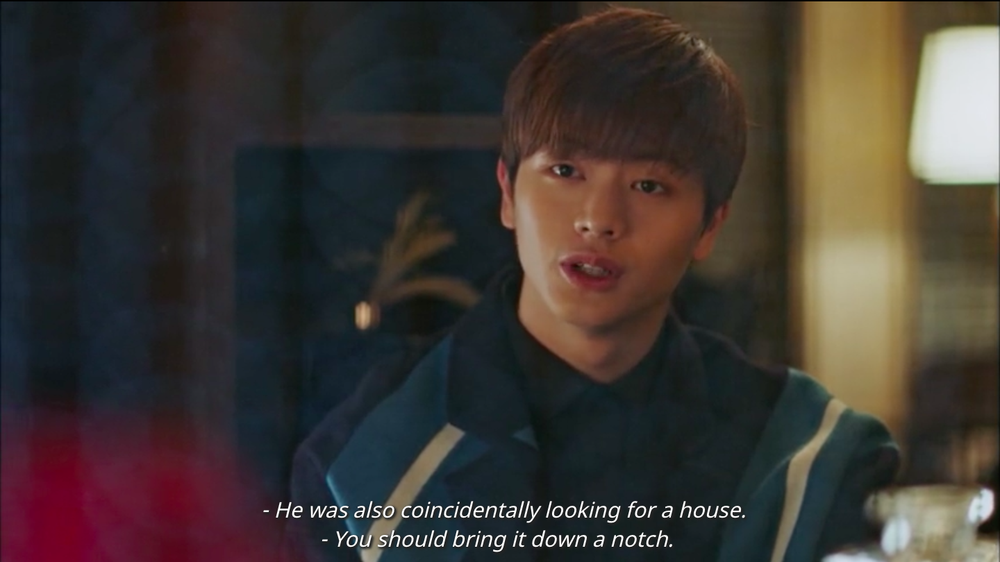
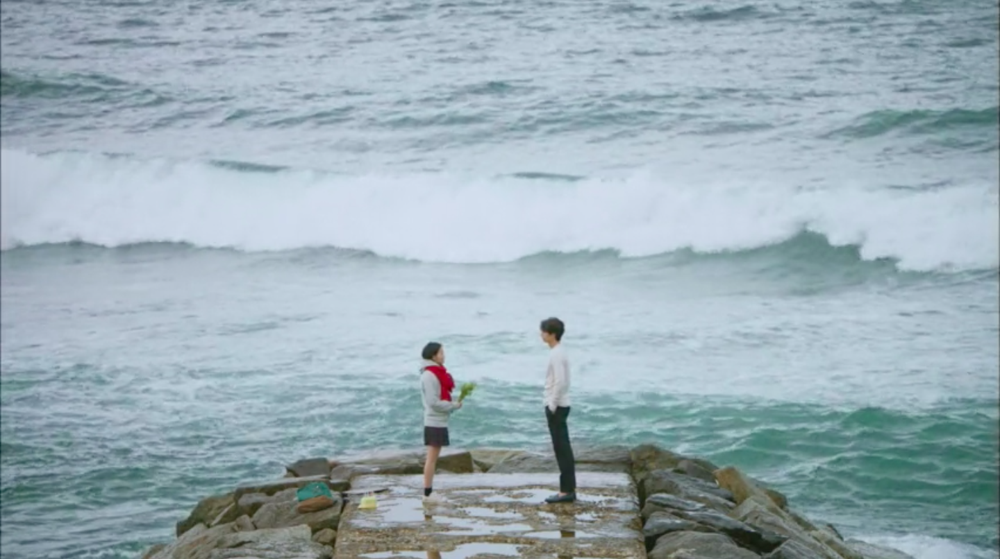
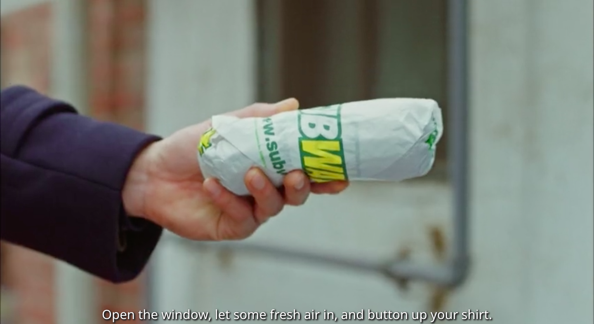
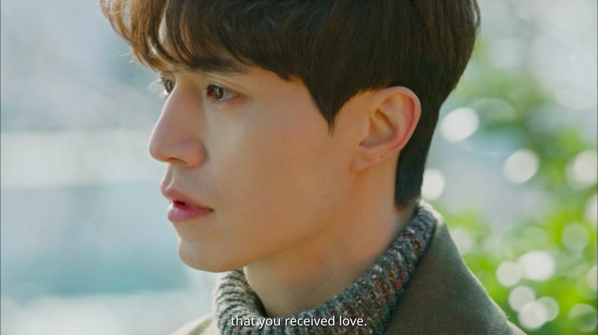
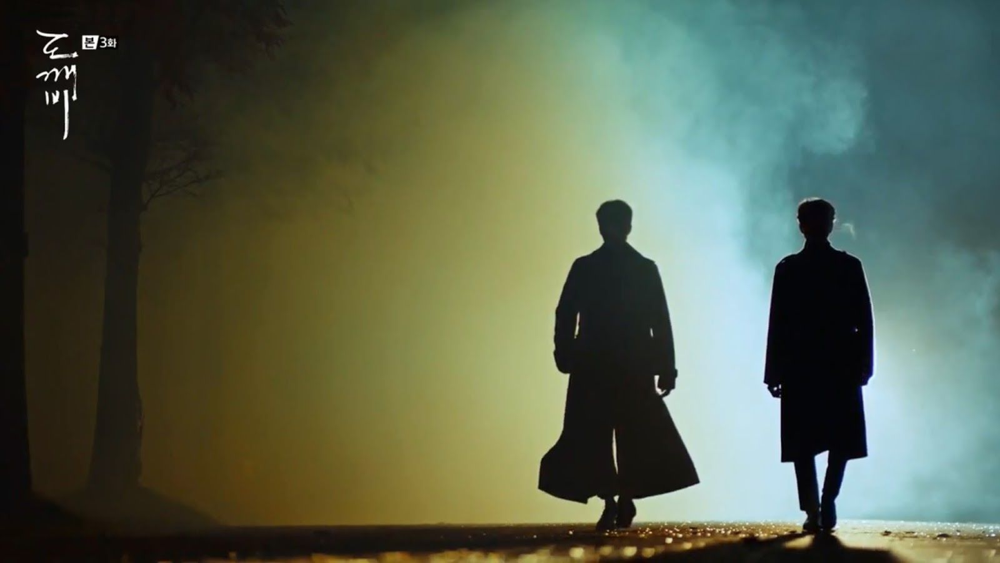
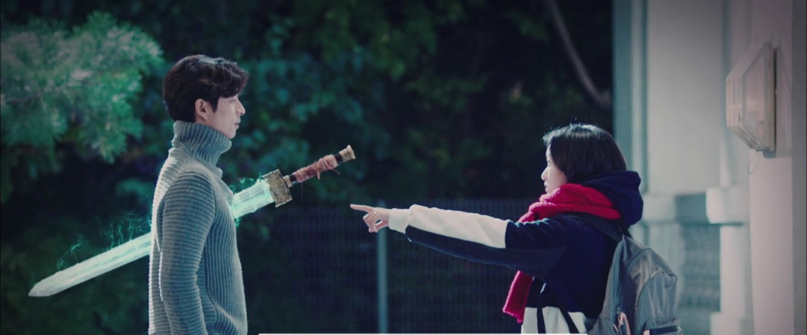
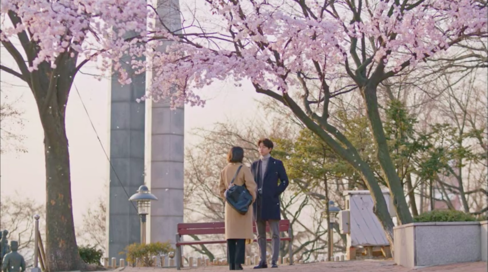
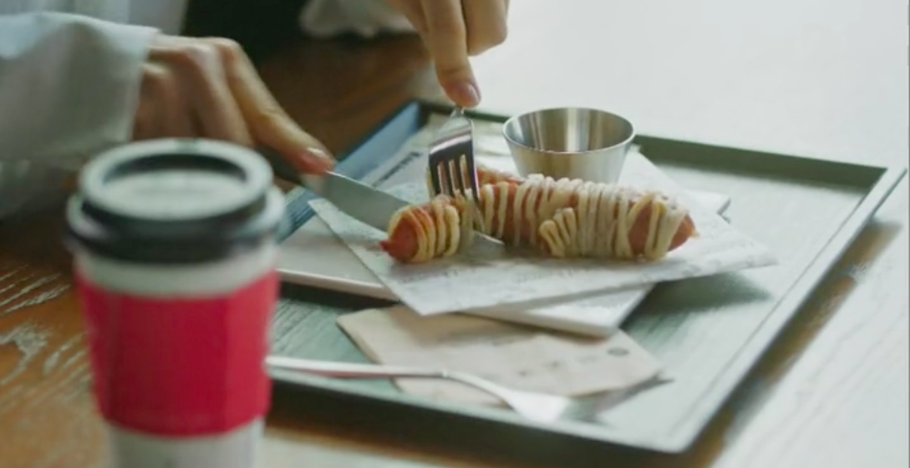
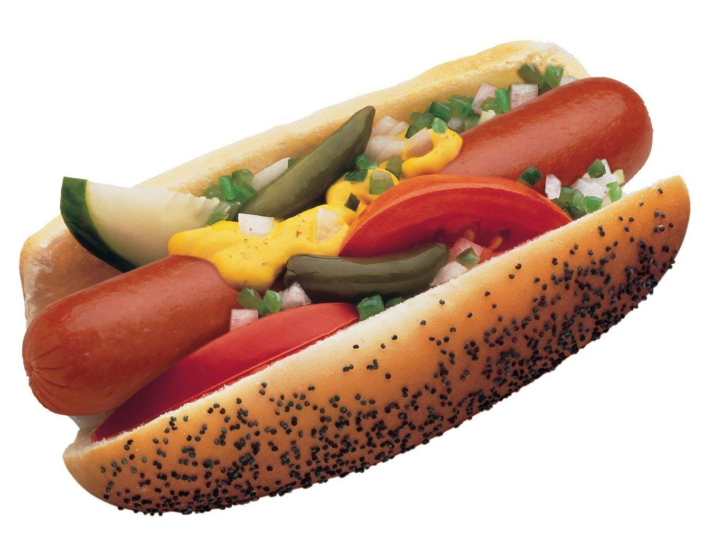

<link rel="stylesheet" href="fullbleed.css">
<link rel="stylesheet" href="https://fonts.googleapis.com/css?family=Roboto">
<head>
  <link rel="icon" href="favicon.ico">
  <title>Guardian: The Lonely and Great God</title>
</head>
<main class="wrapper">
  <h1 class="center">Guardian: The Lonely and Great God</h1>
<p>Love transcends lifetimes in Goblin as Korean dramas dwell on feelings. It's not that nothing happens in kdramas, but they spend more time exploring people's feelings instead of moving on with events after a perfunctory emotional response. Goblin is particularly driven by emotions rather than specific times or places because souls persist through multiple lifetimes (up to 4?) and the show is really about their comings and goings and relationships with one another. The stuff that happens in their lives matters but mainly is something for them to care about while they reflect on their lives and relationships to deeply emotional music. It's almost "we were together,—All else has long been forgotten by me", but the plot and their history is too much of a part of their time together to forget.</p>
<p>
Obviously, Goblin is a lot like Hotel del Luna in that characters carry grudges from long ago and fall in love, but I think the characters overall are better in a few ways. First, the goblin isn't necessarily more interesting than Man Wol, but the people around him are definitely better developed than the people around her. Second, even though his ancient history is shown in fragments, as hers is, it's always clear how his side characters are motivated by their past (which also might be part of why they're  more compelling). Third, the love between the main leads is less one sided than the the relationship mostly about Man Wol.
</p>
<p>
Two things they have in common, though, are small world syndrome and gods/grandmothers entangling fates. Seriously, be careful the next time an old lady offers you an item, because that jewelry from her stall or whatever it is probably contains aeons of significance to you as well as the person it will bring into your life. Like I thought Crash Landing was pushing it with Seri and Ri's coincidential Switzerland meetings, which were gratuitous in the sense that the main storyline could've proceeded without them, but were included so they could save each other one more time. But Goblin pushes it even further by having deities explicitly intertwine fates, even making meta jokes about the excessively small world:
</p>

<p>It's funny that God appears as a butterfly and as Deok Hwa (and briefly as a toddler) - the implication being kind even to the harmless includes both butteflies and Deok Hwa. Similarly, I have a suspicion that old grandmothers meddle with fates in these stories because they were the ones passing the stories down, so the underlying message was always to treat old ladies well. It also seems important to wear large turtleneck sweaters. Wear turtlenecks and be kind to people and you're ready be the hero of a Korean drama.</p>
<p>
Like Gu Chan Seong, the male love interest in Hotel del Luna, it's suprising that Ji Eun Tak, the goblin's bride in Goblin, is <i>not</i> a reincarnation of anyone from a past life, because everyone except them turns out to be some old significant acquaintance. Eun Tak is much more interesting though, because she has her own struggles. As opposed to Gu Chan Seong, who had already completed his education and launched his career, Eun Tak has to study for her college entrance examinations. Studying for college unironically makes her trials and tribulations as weighty as those of a goblin guarding people or a grim reaper ending lives. Maybe moreso in terms of having her own challenges and aspirations and drama.
</p>
<p>Without her personality and energy there could be no romance between her and a 900+ year old supernatural goblin, or even between her and an older man. Of course, it might just make it even weirder to portray Eun Tak as an overly precocious, vivacious girl from a young age. I think what salvages it is that she's generally competent and as in control of her life as possible given her unfortunate circumstances, as well as the one who explicitly asks for a boyfriend and moves their relationship forwards. The one major issue I had was that she wasn't the one to consciously pull the sword out of his chest and instead became a sort of pawn in the fight between the goblin and his evil ghost enemy. Since the whole show set up the goblin's bride as the one who would pull the sword out of his chest and return him to nothingness, she could have taken a more active role in that moment, even though she does act decisively elsewhere. But overall Eun Tak brings more of her own personality to her romance than Gu Chan Seong does to his, imo, which was one of the main strengths of Goblin - she is the goblin's bride, but she is not solely defined in relation to him to the extent that Gu Chan Seong is just a reflection of Man Wol.</p>

<p>Another major strength is the supporting characters - the grim reaper (Wang Yeo), Sunny, and Deok Hwa. I will note that I actually really liked how the grim reaper in Hotel del Luna was a courteous professional but also at times an involved and caring friend, but he was just more of a background character. Wang Yeo was so important to the story that at times in some episodes I felt like he was the real main character, more than the goblin (Kim Sun) or Eun Tak. And his friendship with the goblin was pure gold. Every interaction of theirs hit that kdrama note of poignant relationships from hilarity to melancholy. </p>
<p>One thing they do is spend time preparing and eating food together. Eating food is like 50% of the kdrama secret recipe imo. Speaking of which, was Korean drama created by Subway and BBQ Olive as one big advertisement or what? Like you know that commercial where Kendall Jenner walks from the protest to the police to hand them a Pepsi and the Pepsi, like, ends racism and police violence? After watching Korean dramas, I'm convinced her only mistake was handing them a Pepsi instead of a Subway sandwich. As the goblin goes around helping people, he makes a suicidal guy's noose burst into flames and gives him Subway. Of course there are also a ton of scenes eating in resteraunts, but Subway is also out here saving lives.</p>

<p>So product placement is funny but anyways, I really like food in Korean Dramas. You can tell Eun Tak is a dilligent and caring character because she wakes up in the morning, washes rice and puts it in the rice cooker and goes to make like 15 side dishes, and her family is ungrateful so immediately fuck them. They don't appreciate her rolling gimbap so it's so obvious she's in a better place with the goblin and grim reaper, even though the grim reaper refers to her as a miscellaneously omitted person whose life he previously intended to take, because they cook nice breakfast together and enjoy eating meals together (and fighting with silverware).</p>
<p>The awkward dates between the grim reaper and Sunny were also fun and painful in the best way. Actually, any scene with Sunny in it was either touching or funny, as was any scene with the grim reaper in it, as was any scene with Deok Hwa in it, so basically all the supporting characters were great. Maybe the highlight was the phone calls between Sunny and the grim reaper but they had so many good moments it's hard to pick one. The supporting characters also grow a lot together (by non kdrama standards their lives are ridiculously intertwined but here I guess it's normal and I'm just happy to see them in scenes together).</p>
<p>So anyways, it's clear that if you wear a turtleneck and are nice to people you'll find love, but how exactly does it work? Eun Tak says tap on shoulder, pat on hair, give $5000. Other good gestures include sharing an umbrella and eating beef. I think the $5000 might be a Korean pun on confessing, but also, along with the old favorite of sharing food, especially meat, it's nicely grounded in materialism. Obviously not completely so - when Eun Tak is put in the hotel suite she's happy to be in a fancy room but ultimately lonely, and would much rather live with the goblin and grim reaper.</p>
<p>The whole OST has a lot of songs about love (probably very few songs not about love) but <i>I will go to you like the first snow</i> might be the most famous. The first snow is a romantic Korean thing, mentioned in Crash Landing too. Anways, the song outlines 3 things about being in love:</p>
<p><iframe src="snowing.html" frameBorder="0" height="600px"width="100%"></iframe></p>
<p>Goblin has a lot of watching, maybe to the point of stalking. It's weird because it's not clear how much the person they're stalking knows or remembers. It's cute once they know each other though and freak out about the studied nonchalance they want to put on. And they ask "have you been well?" and care.</p>
<p>Jealousy seems like a common way for kdramas to accelerate a relationship. It's not a source of serious drama for more than an episode or two, but forces someone aloof (Captin Ri, Man Wol) into action to demonstrate affection. The baseball player does that in Goblin.</p>
<p>The ordinary moments are the cute little scenes, like the ones making food and eating together. One of my favorites in Goblin was when he says he'll win her a toy from the claw machine but isn't able to grab it. I half expected him to cheat a bit with magic so it was funny and relatably humanizing to see him just run out of tries and go to the movie.</p>
<p>Those 3 things are probably as good as any for describing love between main characters in Goblin and maybe kdramas more generally. But the nice thing is there's a lot of time spent developing all the characters, so they don't just reveal the twists and respond and move on, like oh the reaper was the king, Sunny was his sister, respond and move on. Instead they really agonize over these revalations way more than is necessary simply to move the plot along. So it gets to the point where I expect them to stop being unhappy with each other and just move on but they really drag it out, which is good because the show is really about their feelings rather than the plot. However, it's the opposite of a show about nothing or a show in which episodes happen and then everyone goes back to normal. They do move events forward but the confrontations are more driven by their inner turmoil and relationships.</p>
<p>So for example when they learn that the reaper was the king in his past life, they could've just fought it out for an episode and reconciled and moved on. But instead of ever going into a fully fledged action scene they just go through all the emotional ramifications. He talks it out with people and there's some good and some tears and later they go fight the creepy villain ghost but that's not really the important part. Don't get me wrong, I was happy when they finally killed him, a lot like the insane initially power hungry/eventually revenge hungry Cho Cheol Gang from Crash Landing, but the really climactic showdowns are just people talking and crying.</p>

<p>Note the turtleneck: it's not why the Kim Shin said this, but it's another sign people loved the reaper.</p>
<p>These are some pictures that have nothing to do with what I'm saying but they look cool. I also have sort of come around to the way kdramas put faded still images at the end of episodes with music. I skip them sometimes but not always because again sometimes they look really cool or were emotional scenes that take a minute to process after the episdoe ends.</p>



<p>Having said that Korea is full of beautiful moments, let me make it clear that Korean hotdogs are not one of them. Some of my Hotel del Luna rant about pizza applies - they're not luxury items, and even though you can add a lot to them, weirdly sweet cheese adjacent drizzle is not the way to do it. I actually tried one at the Hagwon in Korea and it was one of the few things I simply could not eat. For comparison, I also tried gizzards which appeared stranger to me but in terms of taste did not fall into that uncanny valley of resembling a food I know but also very wrong. Delicacy hotdogs are almost a category error and the flavors they use are just not it.</p>

<p>To be clear, you can add condoments to hot dogs. Korea just does it wrong with their oddly artistic drizzle. What you're supposed to do is put it on a poppyseed bun and add tomato, pickle, relish, onion, sport pepper, celery salt, cucumber and mustard. Feel free to omit or add items here or there, I'm not here to gatekeep hotdogs. I mean, I am, but only to censor obsecenities. It's probably ironic that the US created similarly messed up "Asian" food to suit different palates but I stand by my principles. Koreans: this is a hot dog:</p>

</main>
